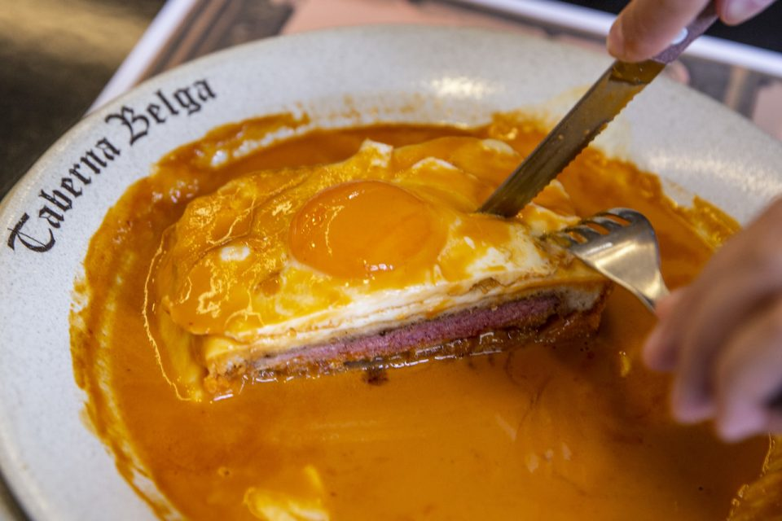

Description
Francesinha refers to a sandwich that is served on a plate. The recipe uses thick slices of white loaf bread with ham (Portuguese Fiambre), sausage, cheese, and steak. The sandwich is then topped with more cheese, usually taken to the oven to melt, and lastly, a slightly spicy sauce on top.
Ingredients
- Francesinha Sauce
- White Sandwich Bread
- Beef Fillets
- Chorizo
- Mild Cheddar Cheese
Steps
- Place one slice of bread on a plate and top with the sliced ham.
- Place the steak on top of the ham. Trim the edges of any protruding pieces of meat.
- Cover with another slice of bread and top with sausages.
- Finally, cover with another slice of bread. Cover your sandwich with 6 to 8 slices of cheese. Repeat for the other sandwich.
- If desired, with a cookie-cutter, make a notch in the cheese at the top of the sandwich. Crack open a small raw egg and place in the opening.
- Preheat oven on broiler
- Put the plate of sandwiches quite close to the top and bake for about 3 minutes. Check regularly to make sure the cheese has only melted and not turned brown.
- Carefully remove the plate and transfer sandwiches to two plates.
- Pour warm sauce over each sandwich covering it entirely.
- Surround each sandwich with plenty of french fries and enjoy.
- Serve some additional sauce to use while eating your sandwich.
- Congratulations, done!